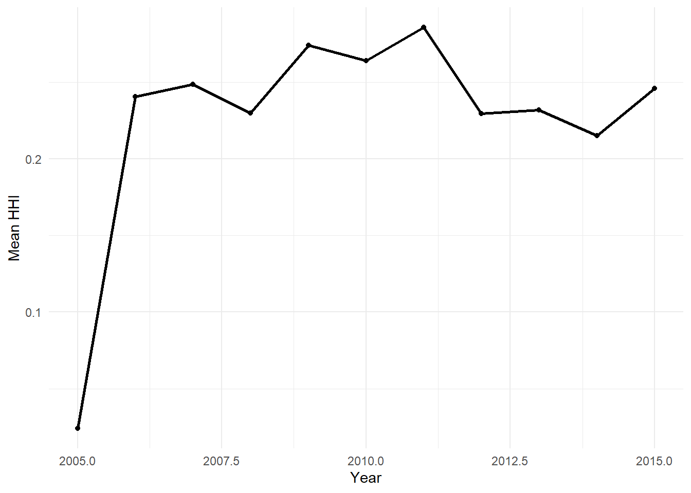
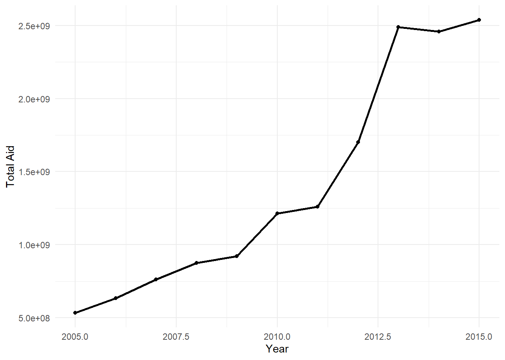

Donor fragmentation—where multiple donors provide aid to the same region without coordination—has been criticized for creating inefficiencies and overburdening recipient governments (knack2007?). While this fragmentation often hinders cohesive development strategies resulting in less effective aid outcomes, some research suggests that competition between donors can drive innovation and offer recipient governments more choice (dreher2015?) . Despite these insights, little is known about how these dynamics play out at the sub-national level, where political and institutional contexts often vary significantly across regions within the same country. This research project aims to investigate how donor fragmentation influences aid effectiveness at the sub-national level, identifying the political and institutional factors that determine whether fragmentation leads to improved or diminished development outcomes.
National policies and institutional quality have long been recognized as crucial determinants of aid effectiveness (burnside2000?), (acemoglu2001?). At the national level, well-functioning governments may be better equipped to leverage competition, while weak governments might struggle to do so. However, at the sub-national level, the impact of fragmentation on aid effectiveness is likely to be shaped not only by these national factors, but also by a combination of local political factors, governance capacity,and institutional frameworks. Sub-national governments with greater administrative capacity are better positioned to coordinate donor efforts and align aid with local priorities, while weaker regions may face inefficiencies and duplication (faguet2014?). Furthermore, decentralized political systems, where local leaders exert greater influence over donor activities, may foster better alignment of fragmented aid with local needs. In centralized systems, fragmented aid flows may reflect national priorities, potentially sidelining regional needs (ahmad2005?). This misalignment can exacerbate inefficiencies, as local needs are sidelined, and regional governments may struggle to manage donor competition effectively.
Data Sources
We will leverage three main datasets:
Geocoded Open Data for Aid and Development (GODAD) dataset (bomprezzi2024?)
The GODAD dataset is based on the OECD’s Creditor Reporting System (CRS) and data from AidData on China (2000-2021), India (2007-2014), and the World Bank (1995-2023), providing geocoded information on aid projects for the 1973-2020 period. The data was geocoded via a natural language processing approach (Google Maps API) and provide auxiliary information about projects along several dimensions. For this research a sub-sample of this data from 2005-2015 will be used in five African Countries: Nigeria, Mozambique, Malawi, Kenya, and Ghana.
Geocoded Afrobarometer data (Rounds 1-6)
William and Mary geocoded the enumeration area names of all six rounds of Afrobarometer’s surveys in 37 African countries between 1999 and 2015 giving us the lat long of this enumeration area. For this research we will use a similar subsample to GODAD covering the same years and countries.
Harmonized DMSP-VIIRS yearly dataset spanning from 1992-2018 (li2020?)
Due to the period of interest 2005-2015, we have a break in the Nighttime light (NTL) data time-series typically used in econometric models, the Defense Meteorological Satellite Program (DMSP)/Operational Linescan System (OLS) which ends in 2013. From 2013 the new time-series is based on the Visible Infrared Imaging Radiometer Suite (VIIRS) on the Suomi National Polar-orbiting Partnership. Given the two different datasets the range of possible values differ. DMSP NTL is less precise and truncated at the top end of the radiance scales, this is not the same issue in VIIRS data which has improved spatial and radiometric resolutions of the VIIRS data have been notably improved, leading to no truncation of upper bound radiance. This however means the two datasets are not directly comparable. Thankfully (li2020?) created an integrated and consistent NTL dataset at the global scale by harmonizing the inter-calibrated NTL observations from the DMSP data and the simulated DMSP-like NTL observations from the VIIRS data.
These datasets will allow us to analyze the interaction between governance and fragmentation and its implications for aid effectiveness at the subnational level. We hypothesize that while governance capacity enhances aid effectiveness, donor fragmentation generally undermines it. Strong governance can mitigate the negative impact of fragmentation, but conversely, as fragmentation increases, it can diminish the positive influence of governance on aid outcomes. We will assess fragmentation at the second administrative level, typically the district level, utilizing the boundaries from GADM 4.1. Following (gehring2017?), we will construct three donor fragmentation indexes for each administrative unit, while governance capacity and perceptions will be derived from Afrobarometer survey data. The primary outcome variable of interest will be the prevalence of poverty at the second administrative level, estimated using aforementioned night light luminosity data.
Descriptive Statistics
We are able to aggregate the data at two levels of sub-national delineation administrative level one i.e. ADM1 (normally states or regions) and administrative level two i.e. ADM2 (normally district or country) both as defined as by GADM 4.1. Unsurprisingly, missing data becomes more of a concern at ADM2 with not all regions being covered by survey or aid data, and the sample size being quite small on average. However we do believe it allows greater heterogeneity to be highlighted that would not be within ADM1.
Furthermore (dreher2015?), points towards the interplay of administrative levels on estimating the effect of aid on nightlights. They use the precursor to this data set on World Bank projects to estimate the effect of aid on nightlight radiance. Following a instrumental variable approach through the interaction of whether or not a country has passed the threshold for receiving the International Development Association’s concessional aid with the recipient region’s probability of receiving aid. Overall, they find significant correlations between aid and growth in ADM2 regions, but no causal effects. Something this analysis hopes to address.
Below we plot the subgovernmental scores for each ADM, we can see this heterogeneity in Figure 1 where the difference within in many regions is markdly different when we go from ADM1 to ADM2.
Figure 1: Mean Subgovernmental Scores by ADM1 and ADM2 in 2015
The differences can also be seen in disconnect between total aid disbursements and fragmentation which interestingly does not follow in lockstep with this increased funding.
Code
summary_data <- panel_aid_admin1 %>%group_by(paymentyear) %>%summarise(mean_frag =mean(frag_index_admin1, na.rm =TRUE),total_aid =sum(total_aid_admin1, na.rm =TRUE),count =n() )# Plot 1: Progression of Fragmentation by yearggplot(summary_data, aes(x = paymentyear, y = mean_frag)) +geom_line(color ="black", size =1) +geom_point(color ="black") +labs(x ="Year",y ="Mean HHI" ) +theme_minimal()# Plot 2: Progression of Total Aid by yearggplot(summary_data, aes(x = paymentyear, y = total_aid)) +geom_line(color ="black", size =1) +geom_point(color ="black") +labs(x ="Year",y ="Total Aid" ) +theme_minimal()

(a) Fragmentation

(b) Aid
Figure 2: Average Fragmentation and Total Aid Overall by Panel Year
This pattern is even clearer when plotting at the national level.
Figure 3: Mean Subgovernmental Scores by ADM1 and ADM2 in Kenya 2015
Model ADM1
We first fit the two models as show below for each fragmentation method we constructed, as the literature points towards the specific pheonoma each measure seeks to address. We don’t include the
Random Effects (AMD1): When shifting from the fixed effects model to random we include a series of controls around the spatial location of the ADM1, distance to capital which is computed using geodisnic distance and converted to KM and the logged average population. With their inclusion we see the effects are what we would have expected with more population or being closer to the capital we see a higher value in night lights.
Model ADM2
We will run the same models as before but use ADM2’s as the units of observation in place of ADM1.
Pesaran CD test for cross-sectional dependence in panels
data: lag(mean_nl, 1) ~ log(total_aid_admin1) * donor_count_admin1 + mean_sgq_admin1 + ge_pct
z = 11.287, p-value < 2.2e-16
alternative hypothesis: cross-sectional dependence
Wooldridge's test for serial correlation in FE panels
data: plm.model
F = 108.98, df1 = 1, df2 = 1136, p-value < 2.2e-16
alternative hypothesis: serial correlation
For both models we see the pick up of higher fragmentation being beneficial in higher aid environments.
Conclusion
Based on the limited ability of our model to create concrete causal relationships between aid and fragmentation we can settle that the model provides some evidence towards the competition hypothesis that with increased aid revenue higher fragmentation leads towards higher mean night light radiance.
Next Steps for Further Research
Following the research (dreher2015?) and (iddawela2021?) due to the endogeneity issues of administrative divisions it may make sense to incorporate a IV strategy. Further modeling of the spatial considerations of aid may also lead to interesting insights potentially through a grid approach.